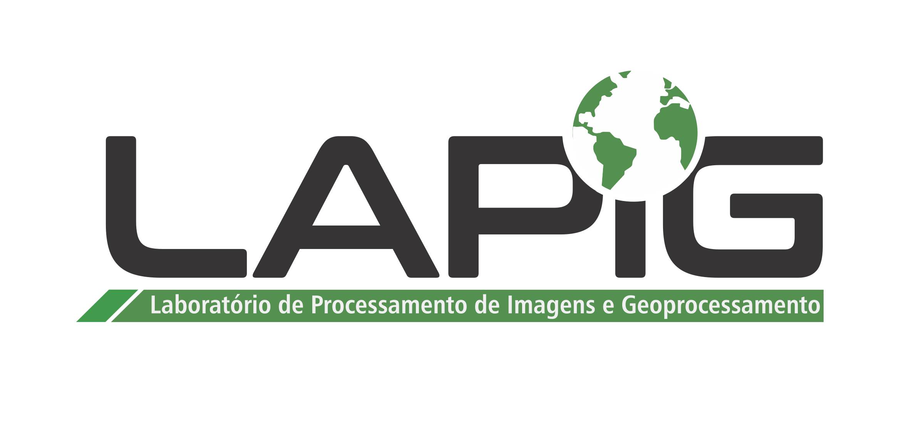
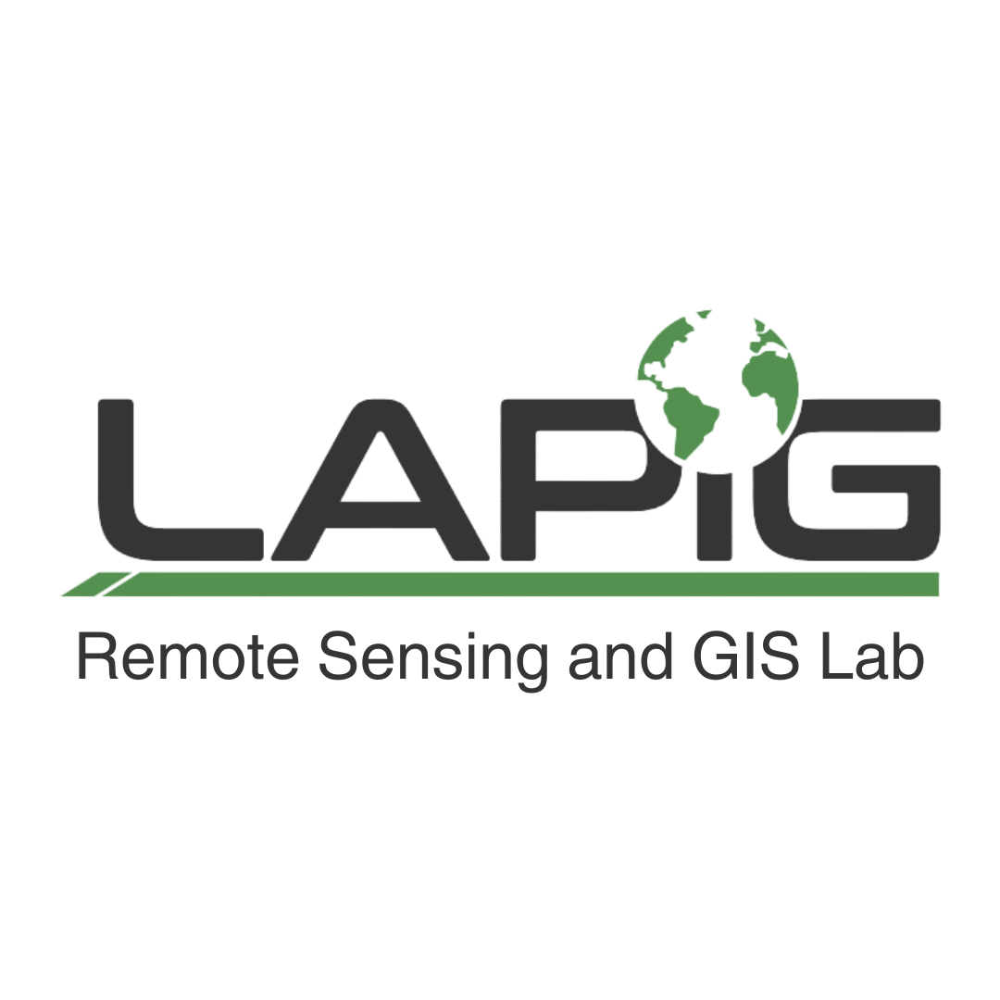

Índice
01 — Plataforma de Marca
Quem somos
Os fundamentos estratégicos que orientam todas as decisões de comunicação e identidade visual do LAPIG.
Propósito
Transformar dados geoespaciais em conhecimento acessível para a proteção e o uso sustentável dos territórios brasileiros e globais.
Missão
Produzir pesquisa de excelência em sensoriamento remoto e geoprocessamento, com foco no monitoramento de pastagens e dinâmicas de uso do solo, gerando dados abertos que subsidiem políticas públicas ambientais, a agenda climática e decisões baseadas em evidências.
Visão
Ser referência mundial na produção de inteligência territorial para pastagens e uso do solo, reconhecido pelo rigor científico, pela inovação tecnológica e pelo impacto mensurável de seus produtos em políticas públicas e mercados de carbono.
Valores
- Rigor científico em todas as etapas, da coleta à publicação
- Transparência e dados abertos como princípio inegociável
- Inovação tecnológica com propósito ambiental
- Impacto socioambiental mensurável e documentado
- Colaboração institucional e interdisciplinar
- Formação de capital humano qualificado
- Ciência aberta e reprodutível
Proposta de Valor Única
O LAPIG é o único laboratório que integra, há mais de 30 anos, pesquisa acadêmica de fronteira em sensoriamento remoto com a produção sistemática de plataformas abertas de dados geoespaciais — traduzindo ciência em ferramentas operacionais para gestores públicos, agronegócio sustentável, mercados de carbono e a comunidade científica global. De Goiânia para 17 países.
Assinatura da Marca
Ciência que enxerga o território
Science that sees the land
Personalidade da Marca
Tom: Científico, mas acessível. Sério, mas não burocrático. Preciso, mas não frio.
Arquétipos: Sábio (conhecimento, rigor, autoridade) + Explorador (descoberta territorial, curiosidade, fronteira).
Dados de Impacto
155M
hectares de pastagem mapeados
17
paises mapeados
93.3%
acuracia global MapBiomas
110+
integrantes da equipe
02 — Logotipo
Sistema de Logotipos
O logotipo do LAPIG é composto pelo wordmark tipográfico e pelo globo terrestre integrado à letra "i". Sua construção foi refinada para garantir legibilidade em todas as escalas.
Conceito
O wordmark LAPIG utiliza tipografia geométrica extra-bold com cantos arredondados e proporções largas, comunicando solidez científica e modernidade tecnológica. O globo terrestre substitui o ponto do "i", integrando organicamente o escopo geoespacial do laboratório à identidade tipográfica. O globo destaca a América do Sul, reforçando o posicionamento territorial brasileiro com projeção global. A barra verde diagonal abaixo do wordmark confere dinamismo e ancora a composição.
Logo oficial é intocável
Os arquivos originais nas pastas Logos Lapig/ e Logo Lapig em inglês/ são os únicos logos oficiais. Não se deve recriar, redesenhar ou alterar nenhum elemento do logotipo. Todas as aplicações devem utilizar os arquivos SVG/PNG originais.
Versões Oficiais
V1 — Com subtitulo (PT-BR)

Arquivo:
01-logos/principal/lapig-logo-v1-ptbr-com-subtitulo.svg · Uso: papelaria, relatórios, apresentações formaisV2 — Sem subtitulo (PT-BR)
Arquivo:
01-logos/principal/lapig-logo-v2-sem-subtitulo.svg · Versão mais utilizada: redes sociais, slides, co-brandingV1 — Com subtitulo (EN)

Arquivo:
Logo Lapig em inglês/SVG/...versão 1.svg · Uso: publicações internacionais, parcerias, GitHubV2 — Com subtitulo (EN, fundo escuro)

Arquivo:
Logo Lapig em inglês/SVG/...versão 2.svg · Versão para fundos escurosÁrea de Proteção
A área de proteção mínima ao redor do logotipo equivale à metade da altura da letra "L" em todas as direções. Nenhum elemento gráfico, texto ou borda deve invadir essa área.
x/2
x/2
x/2
x = altura da letra L no wordmark
Tamanho Mínimo
| Versão | Impresso | Digital |
|---|---|---|
| Com subtítulo | 30mm de largura | 120px de largura |
| Sem subtítulo | 15mm de largura | 64px de largura |
| Ícone hexagonal | 8mm de largura | 16px de largura |
Usos Incorretos
Não distorcer
Nunca alterar as proporções do logotipo
Não rotacionar
O logotipo deve ser sempre horizontal
Não adicionar efeitos
Sem sombras, brilhos, gradientes ou contornos
Não alterar cores
Usar apenas as versões cromáticas oficiais
Não sobre fundo complexo
Em fotos, usar caixa branca/escura atrás do logo
Não substituir o globo
O globo não pode ser trocado por outro ícone
03 — Paleta de Cores
Sistema Cromático
A paleta combina o verde institucional consolidado em 30 anos com tons do Cerrado brasileiro, acentos tecnológicos e neutros funcionais.
Cores Primarias
Cerrado Green
#429B4D · RGB 66,155,77
CMYK 57,0,50,39 · Pantone 7731 C
Deep Forest
#1B3A2A · RGB 27,58,42
Fundos escuros, títulos
Cream
#F6F1E7 · RGB 246,241,231
Fundo padrão claro
Cores Secundarias
Tech Teal
#2A9D8F · RGB 42,157,143
CMYK 73,0,9,38 · Pantone 7473 C
Cerrado Gold
#C4933F · RGB 196,147,63
CMYK 0,25,68,23 · Pantone 7407 C
Earth Brown
#6B4C3B · RGB 107,76,59
Elementos terrosos, texto em destaque
Neutros
Neutral 900
#1A1A18
Neutral 700
#404040
Neutral 500
#6B6B65
Neutral 300
#ABABAA
Neutral 100
#ECECEA
Gradientes Permitidos
Cerrado · fundos escuros
Satelite · contextos tech
Golden Hour · contextos terrosos
Proporção de Uso (60-30-10)
A cor dominante é sempre neutra (cream ou branco). O verde é a cor estrutural. Gold, teal e brown são acentos. O alerta vermelho (#C4533A) é reservado para situações críticas.
Acessibilidade (WCAG 2.1 AA)
| Combinação | Contraste | Uso |
|---|---|---|
| Deep Forest sobre Cream | 12.8:1 ✓ AAA | Texto principal em fundo claro |
| Cerrado Green sobre White | 4.6:1 ✓ AA | Texto grande, botoes, links |
| White sobre Deep Forest | 12.8:1 ✓ AAA | Texto em fundo escuro |
| Gold sobre Deep Forest | 5.2:1 ✓ AA | Destaques em fundo escuro |
| Neutral 700 sobre Cream | 7.1:1 ✓ AAA | Texto secundario em fundo claro |
04 — Tipografia
Sistema Tipográfico
Três famílias tipográficas — todas gratuitas via Google Fonts (licença OFL) — cobrindo display, corpo e dados.
Famílias
| Função | Família | Pesos | Fallback |
|---|---|---|---|
| Display / Títulos | Exo 2 | 600, 700, 800, 900 | Arial, sans-serif |
| Corpo / UI | DM Sans | 400, 500, 600, 700 | system-ui, sans-serif |
| Mono / Dados | JetBrains Mono | 400, 500, 600 | Consolas, monospace |
Escala Tipográfica
h1
Ciência que enxerga
h2
Monitoramento de Pastagens
h3
Atlas das Pastagens do Brasil
h4
Metodologia de Classificação
body
O LAPIG produz dados geoespaciais abertos para monitoramento de pastagens e uso do solo no Cerrado brasileiro.
caption
Fonte: MapBiomas Coleção 10, 2024
overline
Dados de Impacto
data
155.000.000 ha
05 — Elementos Gráficos
Curvas de Nível e Hexágonos
A linguagem visual de apoio do LAPIG utiliza dois elementos gráficos com funções distintas: as curvas de nível topográficas como elemento principal de background (texturas, fundos de slides, fundos de cards) e os hexágonos como elemento complementar para recortes de imagens, ícones de títulos e molduras. Esses elementos nunca substituem ou competem com o logotipo oficial.
Curvas de Nível — Elemento Principal de Background
As curvas de nível topográficas são o elemento gráfico principal para fundos e texturas em todos os materiais da marca. Representam o território, a topografia e o relevo da paisagem — referência direta à cartografia e ao sensoriamento remoto. As curvas fluem de borda a borda com ondulações orgânicas e espaçamento variável, simulando um mapa topográfico real.
Regra absoluta: nenhuma curva pode sobrepor outra
As linhas devem ser sempre paralelas, com distância mínima entre si. Nunca se cruzam, nunca se tocam. Essa regra é inviolável e reproduz o comportamento real de isolinhas topográficas.
Hexágonos — Elemento Complementar
O hexágono é um elemento complementar, utilizado exclusivamente para recortes de imagens, molduras de fotografias (equipe, palestrantes), ícones de título e contêineres de informação. Referência direta aos grids geoespaciais (H3). Não deve ser usado como pattern de background.
Pattern hexagonal · opacidade 10-15% · fundo claro
Curvas de Nível (Isolinhas Topográficas)
As curvas de nível representam o território, a topografia e o relevo da paisagem — com formas concêntricas irregulares que simulam elevações reais, como num mapa topográfico do IBGE ou do SRTM. Referência direta à cartografia e à modelagem de terreno. Uso: texturas de fundo, acentos decorativos, separadores de seção, composições com fotografia.
Curvas de nível em dourado · fundo escuro · ondulações acentuadas · linhas nunca se cruzam
Regras de Uso
Curvas de nível como background principal
Usar em fundos de slides, cards, banners e materiais impressos. Opacidade entre 18% e 32%. Traços de 0.8px a 1.5px. Cores: verde (#429B4D) ou dourado (#C4933F).
Hexágonos como recortes e molduras
Fotos de equipe, instrutores e palestrantes podem usar recorte hexagonal. Ícones de título e selos podem ter forma hexagonal.
Hexágonos como contêineres de ícone
Stickers, favicons e avatares podem usar o hexágono como forma base.
Não usar hexágonos como background
O grid hexagonal não deve ser utilizado como textura de fundo. Os backgrounds pertencem exclusivamente às curvas de nível.
Nunca cruzar curvas de nível
Nenhuma linha pode sobrepor ou cruzar outra. As curvas devem ser sempre paralelas com espaçamento variável, como isolinhas topográficas reais.
Não misturar com outros patterns
Curvas de nível e hexágonos são os únicos elementos gráficos permitidos. Não combinar com círculos, triângulos ou grids quadrados.
Iconografia
Estilo: Line icons, peso de stroke 1.5px, cantos arredondados (2px radius).
Biblioteca recomendada: Lucide Icons (MIT license, consistente com a estética geométrica). Personalizar quando necessário, mantendo o mesmo grid e peso.
Grid: 24x24px base, com área de sangria de 2px. Stroke uniforme de 1.5px.
Fotografia
Fotos institucionais: Preferir iluminação natural. Equipe em contexto de trabalho (campo, laboratório, tela com mapa). Evitar poses artificiais.
Imagens de satélite: Podem ser usadas como fundo com overlay escuro (70–85% de opacidade em Deep Forest) para legibilidade do texto.
Paisagens do Cerrado: Ipês amarelos, pastagens, vegetação nativa — constituem o acervo visual prioritário. Sempre creditar o fotógrafo.
06 — Aplicações
Templates e Materiais
Todos os templates estão disponíveis na pasta 04-templates/ do pacote de marca.
Papelaria
- Cartão de visita — 90×50mm, frente com logo e dados, verso em Cerrado Green com pattern hexagonal
- Papel timbrado — A4, cabeçalho com logo + dados institucionais, rodapé discreto com co-branding UFG
- Assinatura de e-mail — HTML responsivo, compatível com clientes de e-mail corporativos
- Crachá — Retrato, foto em frame hexagonal, cabeçalho verde com logo em branco
Digital
- Apresentação 16:9 — 4 tipos de slide (capa, conteúdo, dados, encerramento). Versões PT-BR e EN
- Instagram feed — 1080×1080, 3 variantes (evento, dados, curso)
- Instagram stories — 1080×1920, 2 variantes (foto com overlay, texto focado)
- Open Graph — 1200×630 para compartilhamento em redes
- Favicon — Ícone hexagonal em 16, 32, 192 e 512px
- Banner GitHub — Padrão README com badge de status
Publicações Científicas
- Pôster de congresso — A0 (90×120cm), 3 colunas, cabeçalho verde, hex grid como textura
- Capa de relatório — A4, composição com foto de satélite + overlay + título
- Figuras para artigos — Exportar a 300 dpi, usar paleta MapBiomas para mapas temáticos, citar "LAPIG/UFG" no rodapé
Sinalização Física
- Placa de porta — Paisagem, fundo Deep Forest, logo em branco, hex pattern
- Roll-up banner — 80×200cm, foto de satélite no topo, conteúdo no meio, barra de logos na base
- Camiseta — Frente: logo pequeno no peito (branco sobre tecido escuro). Costas: tagline + website
- Adesivo/sticker — Formato hexagonal com ícone do globo
07 — Sub-marcas
Política de Sub-marcas
O LAPIG opera múltiplos produtos, projetos e programas. Cada um pode ter identidade própria, desde que respeite a hierarquia da marca-mãe.
Hierarquia
| Nível | Tipo | Exemplos | Regra Visual |
|---|---|---|---|
| Master | Marca-mãe | LAPIG | Logo principal. Sempre presente em todos os materiais. |
| Endorsed | Produto próprio | Atlas das Pastagens, TVI, PastoLegal, Canopeia | Logo próprio + "by LAPIG" ou logo LAPIG adjacente. Pode ter paleta própria dentro do sistema. |
| Program | Programa/série | GeoCursos, LAPIG Connect, LAPIG Escola, Lapigoods | Usa "LAPIG" no nome. Segue a paleta master. Pode ter ícone próprio (dentro do grid hexagonal). |
| Project | Projeto externo | MapBiomas, Global Pasture Watch, Time2Graze | Co-branding. Logo LAPIG aparece como parceiro na barra de logos. Não altera a identidade do projeto externo. |
| Event | Evento pontual | Remanescer, Biomas Brasileiros | Pode ter identidade temática própria. Logo LAPIG na barra de realização/apoio. |
Regras de Co-branding
LAPIG + UFG: O logo da UFG deve sempre acompanhar o do LAPIG em materiais institucionais formais. Posição: à direita do LAPIG, separado por barra vertical ou espaço equivalente à área de proteção. O logo do IESA, quando presente, fica entre LAPIG e UFG.
LAPIG + Parceiros: Em materiais de projetos conjuntos, todos os logos devem ter altura equivalente. Organizar em barra horizontal na base do material. O LAPIG não deve ocupar posição de destaque desproporcional, nem ser reduzido abaixo do tamanho mínimo.
Ordem de Logos em Barra
IESA
UFG
08 — Uso Bilíngue
Diretrizes PT-BR / EN
O LAPIG opera em dois idiomas. Estas regras definem quando usar cada um.
| Contexto | Idioma | Justificativa |
|---|---|---|
| Artigos científicos (journals internacionais) | EN | Padrão das publicações indexadas |
| Relatórios para órgãos públicos brasileiros | PT-BR | SEMAD, IBAMA, MMA — comunicação oficial |
| Redes sociais (@lapigufg) | PT-BR | Público predominantemente brasileiro |
| GitHub, README, docs técnicos | EN | Padrão open-source internacional |
| Apresentações em congressos nacionais | PT-BR | SBSR, CBG, seminários regionais |
| Apresentações em congressos internacionais | EN | AGU, EGU, IGARSS |
| Website institucional | PT-BR + EN | Versão bilíngue com toggle de idioma |
| Cartão de visita | Bilíngue único | Frente em PT-BR, verso em EN, ou card bilíngue único |
| Co-branding com parceiros internacionais | EN | Logo EN ("Remote Sensing and GIS Lab") |
| Material educativo / extensão | PT-BR | Lapigoods, LAPIG Escola — público local |
Termos que Não se Traduzem
Os seguintes termos são nomes próprios e devem ser mantidos na forma original em ambos os idiomas:
- Cerrado — em EN, usar itálico na primeira menção: Cerrado
- LAPIG — sigla universal
- MapBiomas, Atlas das Pastagens, TVI, PastoLegal — nomes de produto
- GeoCursos, LAPIG Connect — nomes de programa
09 — Governança
Gestão da Marca
Regras de aprovação, versionamento e contato do guardião da marca.
Checklist de Aprovação
Todo material que utilize a marca LAPIG deve passar pela seguinte verificação antes da publicação:
- ☐ Logo na versão correta (com/sem subtítulo, PT/EN) e dentro da área de proteção
- ☐ Cores conforme a paleta oficial (não usar aproximações)
- ☐ Tipografia do sistema (Exo 2, DM Sans, JetBrains Mono)
- ☐ Idioma correto para o contexto (ver capítulo 08)
- ☐ Co-branding UFG presente em materiais institucionais formais
- ☐ Contraste WCAG AA em todas as combinações texto/fundo
- ☐ Dados quantitativos verificados e com fonte citada
- ☐ Aprovação do guardião da marca para materiais externos
Guardião da Marca
O guardião da marca é responsável por aprovar materiais de comunicação externa e garantir a consistência da identidade visual.
Responsável: [A definir — coordenação do LAPIG]
Contato: lapig@iesa.ufg.br
Versionamento
Este manual segue versionamento semântico (semver):
- Major (X.0.0) — mudanças estruturais na identidade (novo logo, nova paleta)
- Minor (1.X.0) — adições (novos templates, novas sub-marcas)
- Patch (1.0.X) — correções (ajustes de cor, erros tipográficos)
| Versão | Data | Descrição |
|---|---|---|
| 1.0.0 | Abril 2026 | Lançamento inicial do manual de marca |
Arquivos do Pacote
lapig-brand/
├── 00-manual/
│ ├── manual-marca-lapig-v1.0.0-ptbr.html
│ └── lapig-brand-manual-v1.0.0-en.html
├── 01-logos/
│ ├── principal/ (SVG + PNG)
│ ├── compacto/ (icone hexagonal)
│ └── monocromatico/
├── 02-cores/
│ └── paleta-referencia.svg
├── 03-tipografia/
│ └── tipografia-specimen.html
├── 04-templates/
│ ├── apresentacao/ (ptbr + en)
│ ├── social-media/ (ptbr + en)
│ ├── papelaria/ (ptbr + en)
│ └── publicacoes-cientificas/
└── 05-assets/
├── icones/
├── patterns/ (hexagonos + isolinhas)
└── mockups/